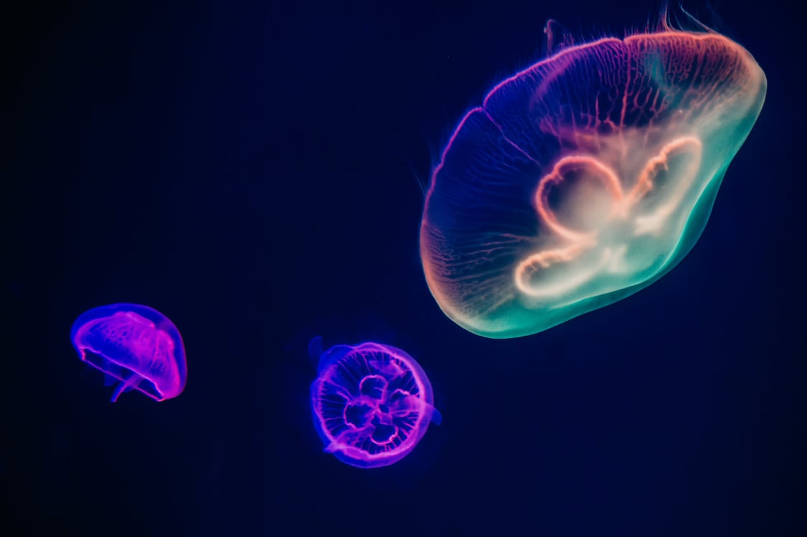

-

Jellyfish
Jellyfish and sea jellies are the informal common names given to the medusa-phase of certain gelatinous members of the subphylum Medusozoa, a major part of the phylum Cnidaria. Jellyfish are mainly free-swimming marine animals with umbrella-shaped bells and trailing tentacles, although a few are anchored to the seabed by stalks rather than being mobile. The bell can pulsate to provide propulsion for highly efficient locomotion. The tentacles are armed with stinging cells and may be used to capture prey and defend against predators. Jellyfish have a complex life cycle; the medusa is normally the sexual phase, which produces planula larva that disperse widely and enter a sedentary polyp phase before reaching sexual maturity.
-
Sea turtle
Sea turtles (superfamily Chelonioidea), sometimes called marine turtles, are reptiles of the order Testudines and of the suborder Cryptodira. The seven existing species of sea turtles are the green sea turtle, loggerhead sea turtle, Kemp's ridley sea turtle, olive ridley sea turtle, hawksbill sea turtle, flatback sea turtle, and leatherback sea turtle.

-

Dolphin
Dolphin is a common name of aquatic mammals within the infraorder Cetacea. The term dolphin usually refers to the extant families Delphinidae (the oceanic dolphins), Platanistidae (the Indian river dolphins), Iniidae (the New World river dolphins), and Pontoporiidae (the brackish dolphins), and the extinct Lipotidae (baiji or Chinese river dolphin). There are 40 extant species named as dolphins.